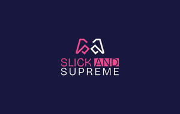

Trade Mark Journal No.2025/021 23 May 2025
UK00004200803 8 May 2025 (25,38,41)

- Class 25
- Clothing; Knitwear [clothing]; Jackets [clothing]; Ready-to-wear clothing; Woolen clothing; Furs [clothing]; Garments for protecting clothing; Linen clothing; Layettes [clothing]; Clothing layettes; Headbands [clothing]; Headbands for clothing; Gloves [clothing]; Gloves as clothing; Clothes; Aprons [clothing]; Maternity clothing; Kerchiefs [clothing]; Jerseys [clothing]; Denims [clothing]; Shorts [clothing]; Cashmere clothing; Capes (clothing); Oilskins [clothing]; Gabardines [clothing]; Silk clothing; Leather clothing; Clothing of leather; Leather (Clothing of -); Collars [clothing]; Parts of clothing, footwear and headgear; Veils [clothing]; Knitted clothing; Hoods [clothing]; Windproof clothing; Corsets [clothing, foundation garments]; Embroidered clothing; Wristbands [clothing]; Bandeaux [clothing]; Belts [clothing]; Belts for clothing; Rainproof clothing; Waterproof clothing; Casual clothing; Visors [clothing]; Jackets being sports clothing; Jackets (Stuff -) [clothing]; Stuff jackets [clothing]; Playsuits [clothing]; Bottoms [clothing]; Ready-made clothing; Clothing for leisure wear; Trunks being clothing; Latex clothing; Woven clothing; Infant clothing; Drawers [clothing]; Drawers as clothing; Leisure clothing; Clothing for sports; Sports clothing; Ties [clothing]; Athletic clothing; Clothing for children; Muffs [clothing]; Bodies [clothing]; Clothing for babies; Clothing for infants; Tops [clothing]; Clothing for cycling; Water-resistant clothing; Weatherproof clothing; Pockets for clothing; Fabric belts [clothing]; Handwarmers [clothing]; Triathlon clothing; Clothing for skiing; Beach clothing; Chaps (clothing); Cowls [clothing]; Thermal clothing; Men's clothing; Fishing clothing; Braces for clothing; Mitts [clothing]; Dance clothing.
- Class 38
- Podcasting; Broadcasting of video and audio programming over the Internet; Videocasting; Streaming audio and video material on the Internet; Video, audio and television streaming services; Podcasting services; Providing access to gambling and gaming websites on the internet; Video broadcasting; Streaming of esports events; Audio, video and multimedia broadcasting via the Internet and other communications networks.
- Class 41
- Casino, gaming and gambling services; Gaming services; Gaming machine entertainment services; Online gaming services; Gaming machine rental; Rental of gaming machines; Gaming machines (Rental of -); On-line gaming services; Providing of casino and gaming facilities; Amusement arcade gaming machine rental services; Gaming services for entertainment purposes; Providing on-line information in the field of computer gaming entertainment; Poker game services; Rental of slot machines [gaming machines]; Rental of casino games; Entertainment services, namely, provision of a virtual reality or metaverse based simulation gaming service; Leasing of casino games; Entertainment services sharing computer games; On-line computer games; Providing online entertainment in the nature of game tournaments; Computer and video game amusement services; Provision of online computer games; Entertainment services for matching users with computer games; Publishing of interactive computer and video game software; Entertainment in the nature of hockey games; Rental of video game consoles; Video game entertainment services; Entertainment in the nature of football games; Online computer game services; Entertainment in the nature of basketball games; Arcade game services; Rental of arcade video game machines; Video game arcade services; Administration [organisation] of poker games; Entertainment in the nature of baseball games; Providing on-line computer games; Entertainment services, namely, providing on-line computer games; Interactive computer game services; Provision of online information in the field of computer games entertainment; Entertainment in the nature of soccer games; Provision of on-line computer games; Information relating to computer gaming entertainment provided online from a computer database or a global communication network; Entertainment services in the nature of video games; Providing on-line interactive computer games; Administration [organisation] of gaming services; Internet games (non-downloadable).
SLICK AND SUPREME GAMING LTD